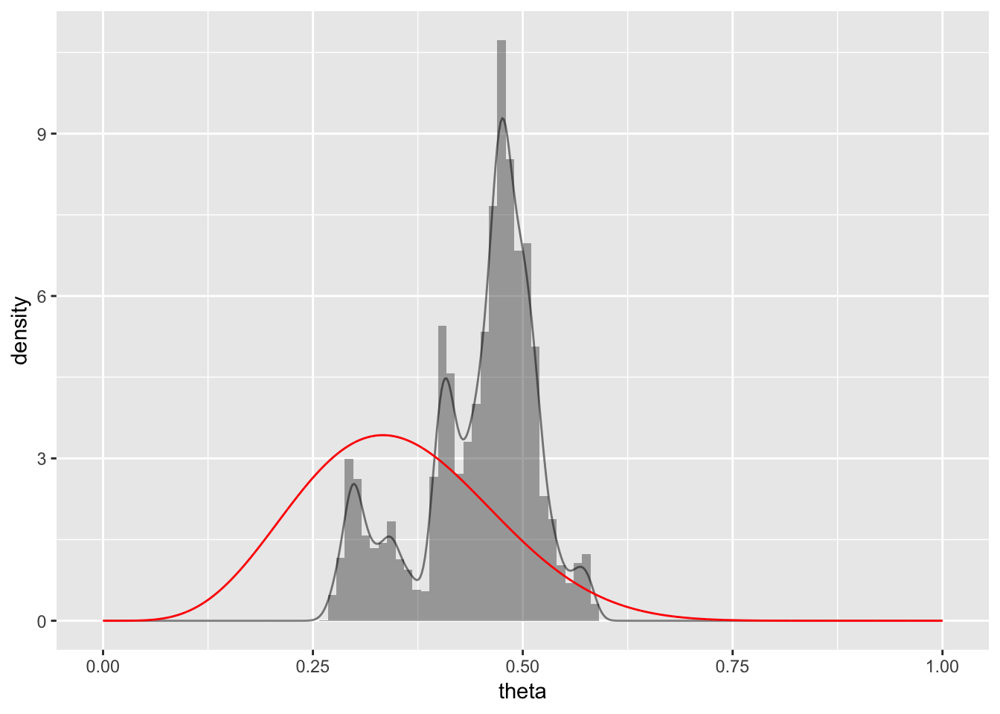

4 Probability
library(ggformula)
library(dplyr)##
## Attaching package: 'dplyr'## The following objects are masked from 'package:stats':
##
## filter, lag## The following objects are masked from 'package:base':
##
## intersect, setdiff, setequal, union4.1 The Set of All Possible Events
4.1.1 Simulating
library(ggformula)
library(dplyr)
theme_set(theme_bw())
# Flip a coin N times and compute the running proportion of heads at each flip.
# Generate a random sample of N flips (heads = 1, tails = 0):
flipSequence <-
function(size = 500, p = 0.5) {
sample(c(0, 1), prob = c(1 - p, p), size = size, replace = TRUE)
}
A <-
data_frame(
n = 1:500,
flip = flipSequence(500),
running_count = cumsum(flip),
running_prop = running_count / n
)## Warning: `data_frame()` is deprecated, use `tibble()`.
## This warning is displayed once per session.gf_line(
running_prop ~ n, data = A,
color = "skyblue",
ylim = c(0, 1.0),
xlab = "Flip Number", ylab = "Proportion Heads",
main = "Running Proportion of Heads") %>%
gf_hline(yintercept = 0.5, linetype = "dotted")
# # Plot a dotted horizontal reference line:
# abline( h = pHeads , lty = "dotted" )
# # Display the beginning of the flip sequence:
# flipLetters <- paste( c("T","H")[flipSequence[1:10]+1] , collapse = "" )
# displayString <- paste0( "Flip Sequence = " , flipLetters , "..." )
# text( N , .9 , displayString , adj = c(1,0.5) , cex = 1.3 )
# # Display the relative frequency at the end of the sequence.
# text( N , .8 , paste("End Proportion =",runProp[N]) , adj = c(1,0.5) , cex = 1.3 )